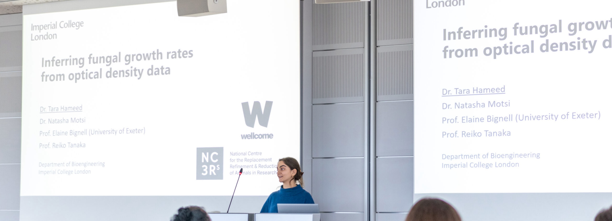
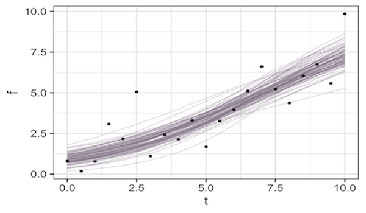
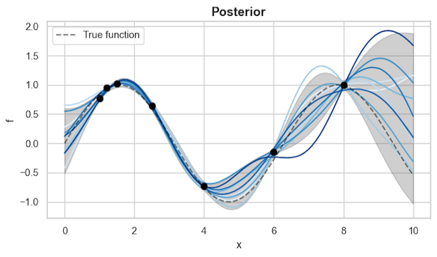

I'm a Postdoc in the Biological Systems and Control Lab in the Bioengineering department of Imperial.
My research mainly focuses on using mathematical and Bayesian modelling to investigate therapies for drug-resistant fungi.
The overarching goal of my work is to locate interdisciplinary solutions to the problems facing medical mycology and eventually translate computational analyses into real-world insights for patients.
Education
- Cap PhD Bioengineering
- Cap MSc Bioinformatics and Theoretical Systems Biology
- Cap BSc Mathematics
My research is at the interface of mechanistic and Bayesian modelling applied to biological time-series data, and so I mostly use Stan, R and Python in my day-to-day work.
Publications
- Inferring antifungal drug synergy from Candidozyma auris optical density data using Bayesian mechanistic modelling
T. Hameed, L. L. H. John, E. Bignell and R. J. Tanaka bioRxiv, (2026), 2026.06.19.733372.
- Inferring fungal growth rates from optical density data
T. Hameed, N. Motsi, E. Bignell and R. J. Tanaka PLoS Comput Biol, 20.5 (2024), e1012105.
- GpABC: a Julia package for approximate Bayesian computation with Gaussian process emulation
E. Tankhilevich*, J. Ish-Horowicz*, T. Hameed*, E. Roesch*, I. Kleijn, M. P H Stumpf, and F. He. Bioinformatics, 36.10 (2020), 3286–3287.
Select presentations

- Bayesian mechanistic modelling of Candida auris optical density data to detect antifungal drug synergy
ICSB 2025. Dublin. (Talk)
- Inferring fungal growth rates from optical density data
SBMI 2023. Jena. (Talk)
- Latent variable models of fungal growth considering the data measurement process
ICSB 2022. Berlin. (Talk)
- In silico modelling of IFNg therapies for invasive aspergillosis
Imperial College Network of Excellence in Fungal Science 2022. London. (Talk)
- Diagnosing data sparsity as a bottleneck for mechanistic model development
SBHD 2021. Virtual. (Poster)
- A systematic workflow to assess the useability of data in model development
SMB 2021. Virtual. (Talk)
- A systematic workflow to assess the useability of data in development of in silico fungal infection models
Mycology 2021. Virtual. (Poster)
- Invasive Aspergillosis pathogenesis: an in silico model
Mycology 2020. Postponed. (Poster)
Tutorials
Below are some tutorials and walkthroughs I've made during my time as a PhD and Postdoc and delivered in the lab-group. They're designed to be introductory tutorials on research methods I've used in my work.

Fitting ODEs in Stan
Tutorial on using Bayesian Inference to fit Ordinary Differential Equation (ODE) models using Stan in R.

Variational Inference for Gaussian Procceses
Quick walkthrough of using Variational Inference (VI) to fit Gaussian Process (GP) models using GPflow in Python.